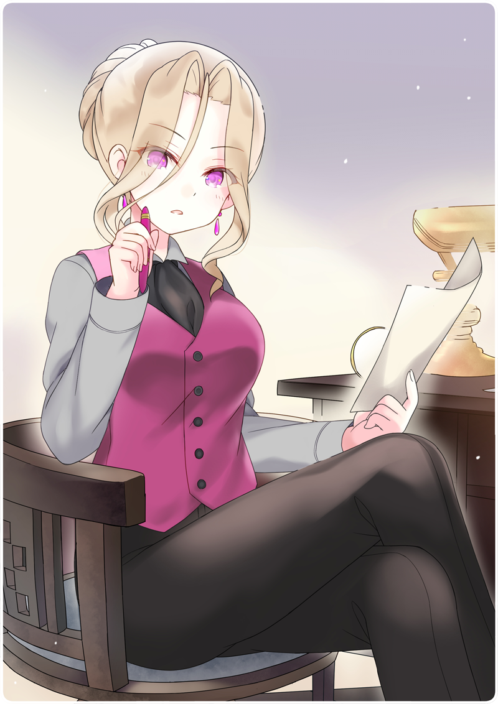

「そうか、一年ほど奉公にね」
黒猫亭の二階。そこにダイヤガラスの衝立で仕切られた応接室がある。
ぴんと背筋を伸ばして、向かい合う先。
すらりとした足を組んで、机の上の書類に目を通している姿がある。とっておきの薄葉紙に、ボクなりに丁寧に筆書きした履歴書だ。
ゆるくウェーブした髪は、後ろにひとつに括られている。右手には万年筆。涼しげな目元がちらりと向けられた。上目遣いに見られると、三白眼気味になってすこし怖い。
「角屋町といえば、神倉製鉄の社長さんといったところか」
「よくご存じですね」
「昔、足を運んだことがある。軍のお得意さんだったからな」
椅子を鳴らして立ち上がる。
思わず見上げてしまう。女性としてはかなりの身長だ。ヒールの革靴をはいているせいもあるだろうけど。
「奥宮さんは、いつ退役なさったんですか？」
「もう３年になるかな」
奥宮おとめ。元軍人で、ここ黒猫亭のオーナーだ。
窓辺に佇むその姿は、どこか重みのある上品さをたたえている。ボクの知っている軍人さんはどちらかというと粗野な人が多かったけれど、まったく正反対だ。
「けっこう……その、偉かったのですよね」
もっとうまい聞き方があると思うのだけど、どうしても間の抜けた質問になってしまう。
おとめ「最終軍歴は少佐だよ」
「ははぁ……なんとなく、もったいない気がしますね」
おとめ「なに、今どき軍人は流行らんよ」
すこしだけ目尻を下げて笑う。落ち着いた、安心感のある声だ。
「それで黒猫亭を？」
おとめ「いまはいくつか事業をやっていてね。
黒猫亭は友人から譲り受けたんだ」
ちらりと目配せする。
壁には何体もの人形たちと一緒に、先代オーナーの姿を写した写真がある。
おとめ「気苦労ばかりで、儲かる商売ではないがね」
「いえ、きっと流行りますよ」
おとめ「そうかな？」
「ええ、絶対」
おとめ「料理のほうは？」
「生業にしていた訳じゃ無いですが、飯炊きはさんざんやりました。
賄いも評判でしたよ。接客も出来ます。
子供の頃から一通り、最初にやったのは駅の弁当売りでしたが……」
おとめ「採用だ」
奥宮さんは、その見た目通り決断が早かった。
おとめ「君なら人柄も問題あるまい。よろしく頼むよ」
そういって、右手を差し出してくる。
それが、いわゆる握手を求めているのだと気付くのに、一拍の時間を要した。
「は、はい、頑張って働きます！」
すこし遅れて、両手でぎゅっと握りしめる。
軍人さんとは思えないほど、細くて繊細な指先だった。
＊ ＊ ＊
石鹸で入念に手を洗うと、真新しいシャツとエプロンに袖を通す。髪を抑えて帽子をかぶり、姿見の前でチェックする。なかなか様になっている。白くて高いコック帽でもあればなお良かったけれど、それは贅沢だろう。
上機嫌でいると、背後から声をかけられた。
「あれ……？」
ちらりと後ろを見つめるが、誰の姿も見えない。おかしい、いま確かに聞こえたのに……。

 「準備、出来ましたか」
「準備、出来ましたか」